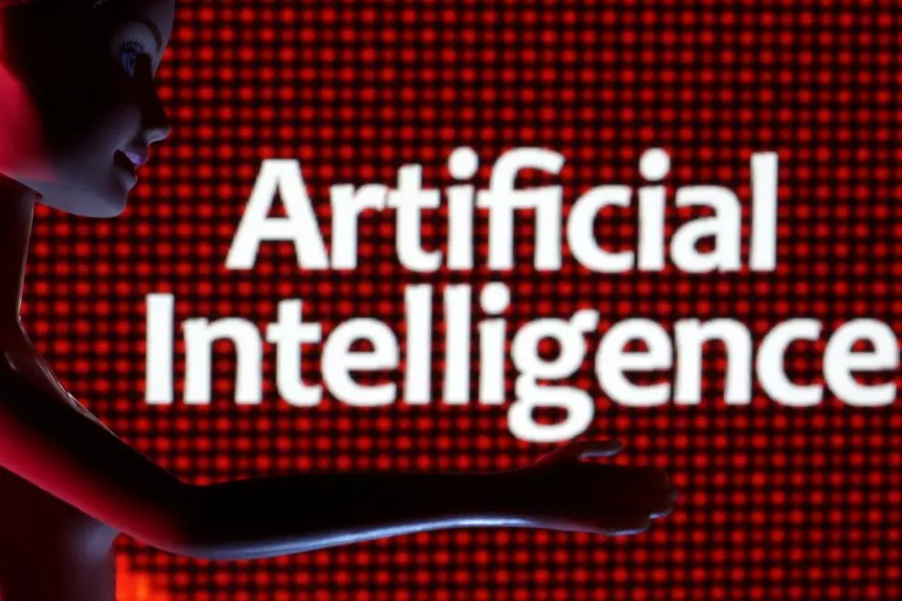

Todo
El paro registrado en las oficinas de los servicios públicos de empleo subió en 19.768 personas en septiembre en relación al mes anterior. La principal causa es el incremento del desempleo en el sector servicios por el fin de la temporada turística. Mientras, septiembre terminó con 2.722.468 personas en paro, marcando, aún así, su menor cifra en este mes desde el año 2008. El desempleo se redujo en septiembre en la construcción; en la agricultura; y en la industria. En cambio, subió en los servicios vinculados al turismo por el fin de la temporada turística, y en el colectivo sin empleo anterior. Sin embargo, la Seguridad Social ganó una media de 18.295 cotizantes gracias al aumento de la ocupación en más de 85.800 personas en el sector de la educación por el inicio del curso escolar. El paro registrado en las oficinas de los servicios públicos de empleo subió en 19.768 personas en septiembre en relación al mes anterior. La principal causa es el incremento del desempleo en el sector servicios por el fin de la temporada turística. Mientras, septiembre terminó con 2.722.468 personas en paro, marcando, aún así, su menor cifra en este mes desde el año 2008. El desempleo se redujo en septiembre en la construcción; en la agricultura; y en la industria. En cambio, subió en los servicios vinculados al turismo por el fin de la temporada turística, y en el colectivo sin empleo anterior. Sin embargo, la Seguridad Social ganó una media de 18.295 cotizantes gracias al aumento de la ocupación en más de 85.800 personas en el sector de la educación por el inicio del curso escolar. Oficina de Empleo El paro sube en agosto en 24.826 personas tras cinco meses de descensos Con este repunte en la afiliación, el sistema alcanzó los 20.724.706 ocupados, su nivel más elevado en un mes de septiembre dentro de la serie histórica, según datos publicados este martes por el Ministerio de Inclusión, Seguridad Social y Migraciones, que ha destacado que entre el 20 y el 29 de septiembre se superaron los 20,8 millones de afiliados en la serie diaria. Sin embargo, la subida de la afiliación registrada en septiembre de este año es la menor en este mes desde el ejercicio 2019.
La Junta Electoral Central (JEC) ha multado con 2.200 euros a Pedro Sánchez por haber utilizado un acto institucional en Bruselas para criticar los pactos entre el PP y Vox y presumir de su gestión en plena campaña electoral del 23J. De este modo, el organismo sanciona que el Ejecutivo se valiese de los "medios públicos" de los que dispuso tras el Consejo Europeo de los pasados 29 y 30 de junio para hacer "electoralismo".
La JEC acordó abrir este expediente a Sánchez el pasado mes de julio al aceptar una denuncia del PP, decisión que se adoptó con la discrepancia de tres vocales del organismo. El organismo arbitral concluye que Sánchez incurrió en la infracción tipificada en el artículo 153.1 de la Ley Electoral, por "la realización de manifestaciones con contenido valorativo y electoralista, aprovechando los medios públicos de que disponía".
El contenido completo de su resolución se conocerá este viernes, pero de momento la JEC ha argumentado que Sánchez habría vulnerado la ley por utilizar un acto institucional para emitir "alusiones a realizaciones y logros resultantes de la gestión desarrollada por el Gobierno que preside", así como "apreciaciones valorativas que descalifican a otras formaciones políticas". Cuando Sánchez fue cuestionado por el acuerdo que acababan de cerrar el PP y Vox en Extremadura, el líder socialista descalificó los pactos postelectorales de ambos partidos en distintos puntos de España alertando de que podrían repetirse tras las elecciones del 23 de julio. Asimismo, el Ejecutivo presumió del reconocimiento en "privado" por parte de sus colegas europeos sobre su "extraordinario desempeño de la economía española en el ámbito del crecimiento, la creación de empleo y la evolución de la inflación".
En su resolución del pasado mes de julio, la JEC señalaba que estas manifestaciones no podían "entenderse imprescindibles para la salvaguarda del interés público o para el correcto desenvolvimiento de un servicio público", como parecía alegar la defensa del presidente. Según el organismo arbitral, tales argumentos esgrimidos por Moncloa carecían de "consistencia", puesto que "la simple lectura" de las palabras de Sánchez en el acto no deja duda.
La JEC aclaró que en recientes acuerdos el organismo ya había señalado la importancia de que "en España los altos cargos de las Administraciones Públicas están al servicio de todos los españoles y que, por consiguiente, está absolutamente prohibido el uso partidista de los recursos institucionales en beneficio de una determinada facción política".

Una investigación llevada a cabo por las psicólogas Lucía Vicente y Helena Matute de la Universidad de Deusto, en Bilbao, evidencia que las personas podemos heredar sesgos de la Inteligencia Artificial (IA). El estudio se publica en la revista de acceso abierto Scientific Reports. Los impresionantes resultados logrados por esta nueva tecnologías reflejan su alta fiabilidad y se han hecho muy populares. Sin embargo, los algoritmos de la IA también pueden estar sesgados, cometer errores sistemáticos. Estos programas son entrenados con datos que son producto de decisiones humanas, y si contienen sesgos, los modelos de inteligencia artificial pueden aprenderlos y reproducirlos. De hecho, existen ya numerosas pruebas de que, efectivamente, esta hereda y amplifica los sesgos humanos. Esa situación era conocida, pero ahora el nuevo estudio muestra que también puede ocurrir el efecto contrario: las personas podríamos heredar sesgos de la IA, con lo que corremos el riesgo de entrar en un bucle bastante peligroso. Así crearon un criterio de clasificación, de forma que, a mayor proporción de celdas oscuras, significaba que la muestra de tejido estaba afectada por la enfermedad, era un positivo; mientras que, si había una mayor proporción de células claras, era un negativo. Los participantes debían elegir entre esas dos opciones. La mitad de los voluntarios constituyeron un grupo de control que no contó con ninguna asistencia de la IA. Por su parte, la otra mitad realizó la tarea con las recomendaciones de una inteligencia artificial con un error sistemático. Siempre se equivocaba para una muestra de tejido con una configuración de colores particular: 40% de células oscuras y 60% de células claras. 